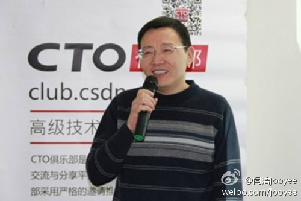

转发微博@闫洁jooyee:据悉，当当网CTO熊长青先生将于下月初正式离职，Justin曾历任卓越网CTO、游易旅行网创始人兼CEO、易网通集团COO，并于2011年9月接替当当网前CTO戴修宪任职至今，两年半来完成了技术部门由上市团队向“后上市”阶段的顺利过渡，并带来了较高的技术管理体系，选择当前离任也将团队的影响降到了最小~ 
这老公的回复和语调真是太熟悉了。//@切总:我以前的公司都在慈铭体检，我每回都预约亮马桥路第一上海中心那家，感觉服务一直还不错，你不信我，所以吃亏也算给你长长教训。[挖鼻屎]---:抱歉，此微博已被作者删除。查看帮助： 网页链接